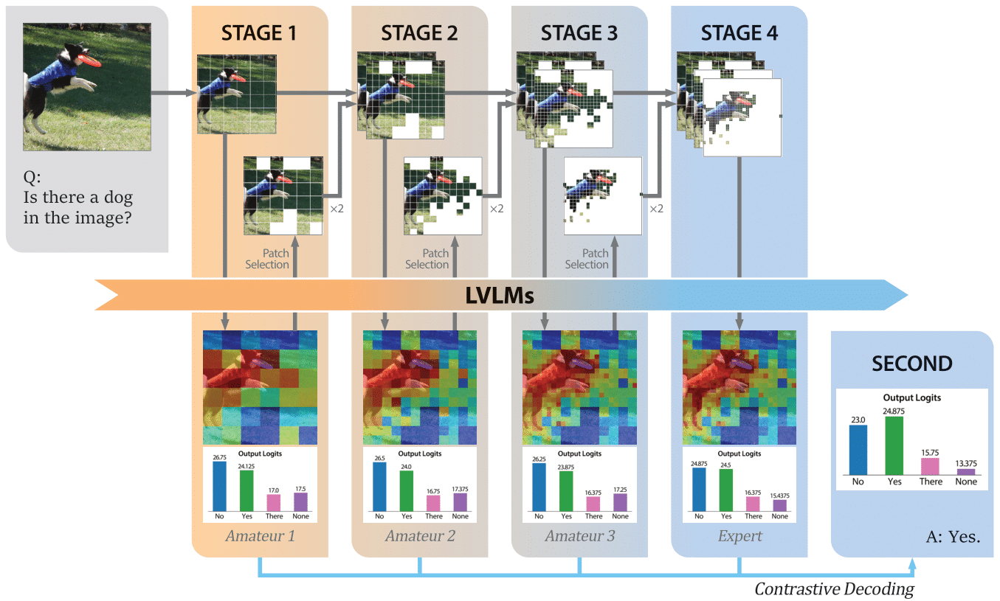

We propose SECOND: Selective and Contrastive Decoding, a novel approach that enables VLMs to effectively leverage multi-scale visual information with an object-centric manner, closely aligning with human visual perception.